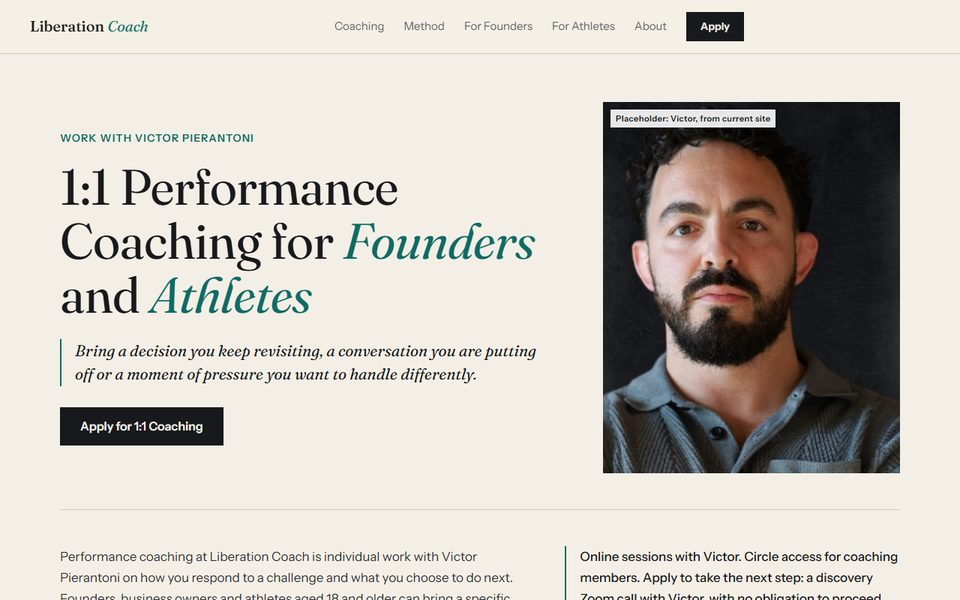
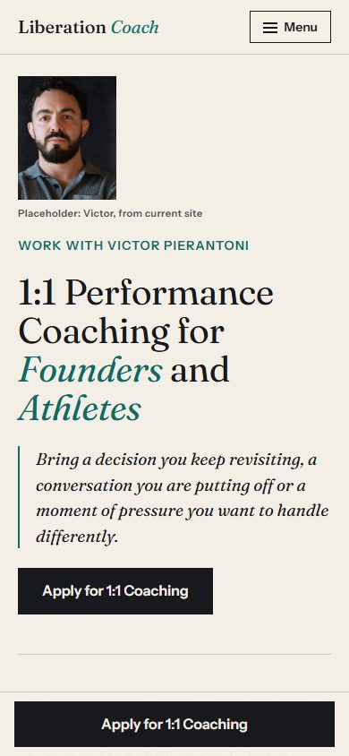
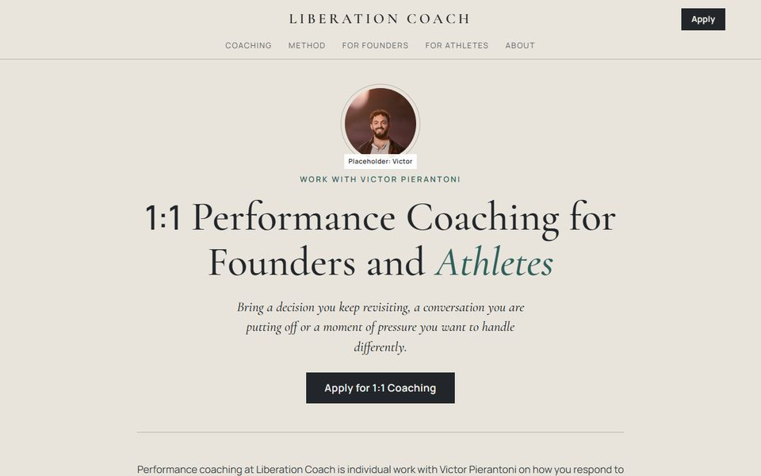
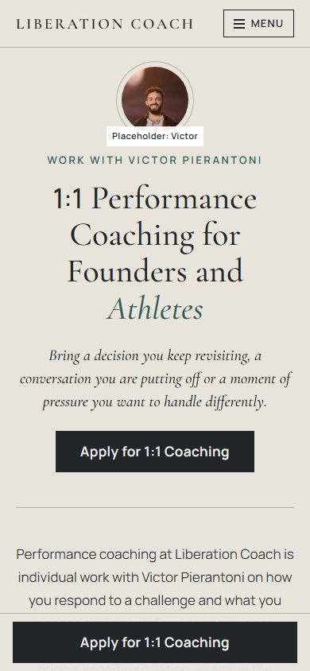
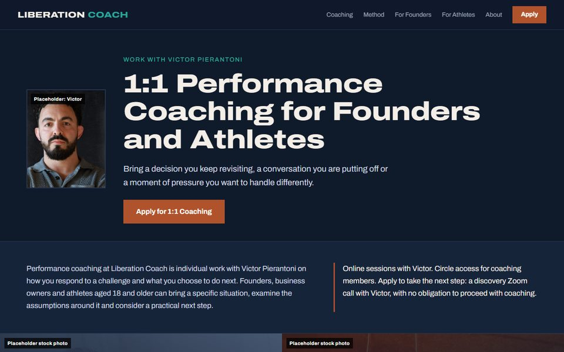
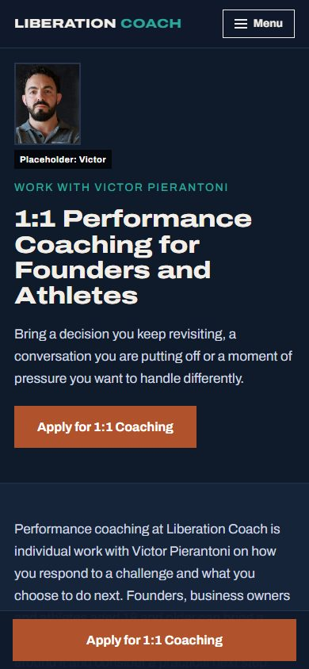

Option 1: Ink and Paper
Editorial and calm. Warm paper tones, a classic serif with teal accents, and Victor's portrait anchoring the top of the page.
Three design directions for the new liberation.coach homepage. All three use the same draft copy. Each one has its own look and its own layout, from the hero down. Open each one on desktop and on a phone, then pick the direction to take forward.


Editorial and calm. Warm paper tones, a classic serif with teal accents, and Victor's portrait anchoring the top of the page.


Classical and centered. Limestone background, a carved-style serif and thin rules, a nod to the Zen and Stoic background.


Bold and athletic. Deep navy and clay, wide bold headings, and the founder and athlete paths shown side by side.
Design drafts for internal review by Infintech Designs. Not the live website.